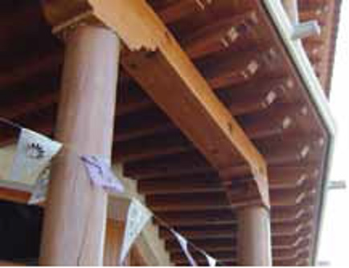
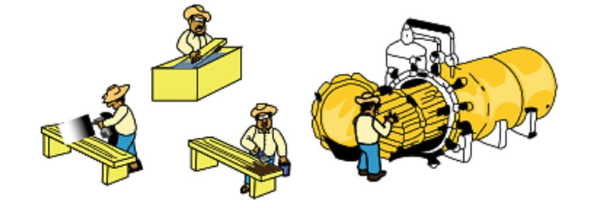

3.1. Durabilidad natural
Cuando la madera se mantiene en condiciones secas, cuando se utiliza la madera de duramen y cuando se aplican los diseños constructivos para mantener la madera bien ventilada, su durabilidad es alta; no obstante, hay que considerar que existen especies de madera de muy alta durabilidad y resistencia al biodeterioro, principalmente las maderas duras tropicales, mientras que algunas otras manifiestan una resistencia al biodeterioro limitada, como sucede con la albura de las maderas suaves. Dicha durabilidad natural está también influida por las condiciones de exposición a la humedad y a la intemperie.

3.2. Preservación de la madera
En los casos donde se usa madera de baja resistencia al biodeterioro en condiciones de alto riesgo, como es la madera empotrada en la tierra (cimentaciones y pilotes), o expuesta a la humedad, es preferente que dicha madera se someta a un proceso de preservación, impregnándole un preservador fungicida e insecticida, de los cuales existen varios en México, y que se pueden aplicar ya sea por métodos sin presión: brocha o inmersión, o si es posible, por métodos a vacío – presión en un autoclave.
